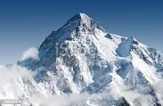
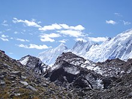
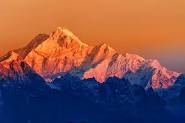
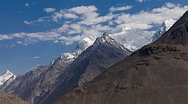
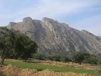

Pakistan is home to many mountains above 7,000 metres (22,970 ft). Five of the world's fourteen mountains taller than 8,000 metres (26,000 ft) ("eight-thousanders") are in Pakistan, four of which are near Concordia. Most of Pakistan's high peaks are located in the Karakoram range, the highest of which is K2 8611 meter long (8,611 metres (28,251 ft)), the second-highest peak on earth. The highest peak of Himalayan range in Pakistan is Nanga Parbat (8,126 metres (26,660 ft)), which is the ninth-highest peak of the world.
The Karakoram is a mountain range in Kashmir region spanning the borders of Pakistan, China, and India, with the northwest extremity of the range extending to Afghanistan and Tajikistan. Most of the Karakoram mountain range falls under the jurisdiction of Gilgit-Baltistan, which is controlled by Pakistan. Its highest peak (and world's second-highest), K2, is located in Gilgit-Baltistan. It begins in the Wakhan Corridor (Afghanistan) in the west, encompasses the majority of Gilgit-Baltistan, and extends into Ladakh (controlled by India) and Aksai Chin (controlled by China). It is the second-highest mountain range in the world and part of the complex of ranges including the Pamir Mountains, the Hindu Kush and the Himalayan Mountains. The Karakoram has eighteen summits over 7,500 m (24,600 ft) in height, with four exceeding 8,000 m (26,000 ft): K2, the second-highest peak in the world at 8,611 m (28,251 ft), Gasherbrum I, Broad Peak and Gasherbrum II. The range is about 500 km (311 mi) in length and is the most heavily glaciated part of the world outside the polar regions. The Siachen Glacier at 76 kilometres (47 mi) and the Biafo Glacier at 63 kilometres (39 mi) rank as the world's second and third longest glaciers outside the polar regions. The Karakoram is bounded on the east by the Aksai Chin plateau, on the northeast by the edge of the Tibetan Plateau and on the north by the river valleys of the Yarkand and Karakash rivers beyond which lie the Kunlun Mountains. At the northwest corner are the Pamir Mountains. The southern boundary of the Karakoram is formed, west to east, by the Gilgit, Indus and Shyok rivers, which separate the range from the northwestern end of the Himalaya range proper. These rivers flow northwest before making an abrupt turn southwestward towards the plains of Pakistan. Roughly in the middle of the Karakoram range is the Karakoram Pass, which was part of a historic trade route between Ladakh and Yarkand that is now inactive. The Tashkurghan National Nature Reserve and the Pamir Wetlands National Nature Reserve in the Karalorun and Pamir mountains have been nominated for inclusion in UNESCO in 2010 by the National Commission of the People's Republic of China for UNESCO and has tentatively been added to the list
The Karakoram is in one of the world's most geologically active areas, at the plate boundary between the Indo-Australian plate and the Eurasian plate. A significant part, somewhere between 28 and 50 percent, of the Karakoram Range is glaciated covering an area of more than 15,000 square kilometres or 5,800 square miles, compared to between 8 and 12 percent of the Himalaya and 2.2 percent of the Alps. Mountain glaciers may serve as an indicator of climate change, advancing and receding with long-term changes in temperature and precipitation. The Karakoram glaciers are slightly retreating, unlike the Himalayas where glaciers are losing mass at significantly higher rate, many Karakoram glaciers are covered in a layer of rubble which insulates the ice from the warmth of the sun. Where there is no such insulation, the rate of retreat is high.
The Himalayas, or Himalaya (/ˌhɪməˈleɪ.ə, hɪˈmɑːləjə/; Sanskrit: [ɦɪmaːlɐjɐ]; from Sanskrit himá 'snow, frost', and ā-laya 'dwelling, abode'), is a mountain range in Asia, separating the plains of the Indian subcontinent from the Tibetan Plateau. The range has some of the planet's highest peaks, including the very highest, Mount Everest in Nepal. Over 100 peaks exceeding 7,200 m (23,600 ft) in elevation lie in the Himalayas. By contrast, the highest peak outside Asia (Aconcagua, in the Andes) is 6,961 m (22,838 ft) tall. The Himalayas abut or cross five countries: Bhutan, India, Nepal, China, and Pakistan. The sovereignty of the range in the Kashmir region is disputed among India, Pakistan, and China. The Himalayan range is bordered on the northwest by the Karakoram and Hindu Kush ranges, on the north by the Tibetan Plateau, and on the south by the Indo-Gangetic Plain. Some of the world's major rivers, the Indus, the Ganges, and the Tsangpo–Brahmaputra, rise in the vicinity of the Himalayas, and their combined drainage basin is home to some 600 million people; 53 million people live in the Himalayas. The Himalayas have profoundly shaped the cultures of South Asia and Tibet. Many Himalayan peaks are sacred in Hinduism and Buddhism; the summits of several—Kangchenjunga (from the Indian side), Gangkhar Puensum, Machapuchare, Nanda Devi and Kailas in the Tibetan Transhimalaya—are off-limits to climbers. Lifted by the subduction of the Indian tectonic plate under the Eurasian Plate, the Himalayan mountain range runs west-northwest to east-southeast in an arc 2,400 km (1,500 mi) long.Its western anchor, Nanga Parbat, lies just south of the northernmost bend of the Indus river. Its eastern anchor, Namcha Barwa, lies immediately west of the great bend of the Yarlung Tsangpo River. The range varies in width from 350 km (220 mi) in the west to 150 km (93 mi) in the east
The physical factors determining the climate in any location in the Himalayas include latitude, altitude, and the relative motion of the Southwest monsoon. From south to north, the mountains cover more than eight degrees of latitude, spanning temperate to subtropical zones. The colder air of Central Asia is prevented from blowing down into South Asia by the physical configuration of the Himalayas. This causes the tropical zone to extend farther north in South Asia than anywhere else in the world. The evidence is unmistakable in the Brahmaputra valley as the warm air from the Bay of Bengal bottlenecks and rushes up past Namcha Barwa, the eastern anchor of the Himalayas, and into southeastern Tibet. Temperatures in the Himalayas cool by 2.0 degrees C (3.6 degrees F) for every 300 metres (980 ft) increase of altitude.
The Hindu Kush is an 800-kilometre-long (500 mi) mountain range in Central and South Asia to the west of the Himalayas. It stretches from central and western Afghanistan into northwestern Pakistan and far southeastern Tajikistan. The range forms the western section of the Hindu Kush Himalayan Region to the north, near its northeastern end, the Hindu Kush buttresses the Pamir Mountains near the point where the borders of China, Pakistan and Afghanistan meet, after which it runs southwest through Pakistan and into Afghanistan near their border. The eastern end of the Hindu Kush in the north merges with the Karakoram Range. Towards its southern end, it connects with the Spin Ghar Range near the Kabul River. It divides the valley of the Amu Darya (the ancient Oxus) to the north from the Indus River valley to the south. The range has numerous high snow-capped peaks, with the highest point being Tirich Mir or Terichmir at 7,708 metres (25,289 ft) in the Chitral District of Khyber Pakhtunkhwa, Pakistan. The Hindu Kush range region was a historically significant center of Buddhism, with sites such as the Bamiyan Buddhas. The range and communities settled in it hosted ancient monasteries, important trade networks and travelers between Central Asia and South Asia. While the vast majority of the region has been majority-Muslim for several centuries now, certain portions of the Hindu Kush only became Islamized relatively recently, such as Kafiristan, which retained ancient polytheistic beliefs until the 19th century when it was converted to Islam by the Durrani Empire and renamed Nuristan ("land of light. The Hindu Kush range has also been the passageway during the invasions of the Indian subcontinent, and continues to be important to contemporary warfare in Afghanistan.
The range forms the western section of the Hindu Kush Himalayan Region and is the westernmost extension of the Pamir Mountains, the Karakoram and the Himalayas. It divides the valley of the Amu Darya (the ancient Oxus) to the north from the Indus River valley to the south. The range has numerous high snow-capped peaks, with the highest point being Tirich Mir or Terichmir at 7,708 metres (25,289 ft) in the Chitral District of Khyber Pakhtunkhwa, Pakistan. To the north, near its northeastern end, the Hindu Kush buttresses the Pamir Mountains near the point where the borders of China, Pakistan and Afghanistan meet, after which it runs southwest through Pakistan and into Afghanistan near their border. The eastern end of the Hindu Kush in the north merges with the Karakoram Range. Towards its southern end, it connects with the Spin Ghar Range near the Kabul River.
The Sulaiman Mountains, also known as Kōh-e Sulaymān (Balochi/Urdu/Persian: کوهِ سليمان; "Mountains of Solomon") or Da Kasē Ghrūna (Pashto: د كسې غرونه; "Mountains of Kasi"), are a north–south extension of the southern Hindu Kush mountain system in Pakistan and Afghanistan. They rise to form the eastern edge of the Iranian plateau. They are located in the Kandahar, Zabul, Paktika and Paktia provinces of Afghanistan, and in Pakistan they extend over the northern part of Balochistan and some southern parts of Khyber Pakhtunkhwa. In southwestern Punjab, the mountains extend into the two districts of Dera Ghazi Khan and Rajanpur, which are located west of the Indus River on the boundary with Balochistan. Bordering the mountains to the east are the plains of the Indus River valley, and to the north are the arid highlands of the Central Hindu Kush whose heights extend up to 3,383 metres (11,099 ft). Together with the Kirthar Mountains on the border between Balochistan and Sindh, the Sulaiman Mountains form what is known as the Sulaiman-Kirthar geologic province. The most well-known peak of the Sulaimans is the twin-peaked Takht-e-Sulaiman or "Throne of Solomon" at 3,487 metres (11,440 ft), located near Darazinda in Dera Ismail Khan Subdivision, close to the border with both South Waziristan and the Zhob District of neighboring Balochistan province. The highest peak, however, is Zarghun Ghar at 3,578 metres (11,739 ft) near Quetta, Pakistan. The next highest peak in Balochistan province is Khilafat Hill at 3,475 metres (11,401 ft), which is located in the Ziarat District of Pakistan and is famous for the Ziarat Juniper Forest, where Juniperus macropoda trees grow
The eastern edge of the Sulaiman range runs 280 miles (450 km) from the Gomal Pass in Pakistan's Khyber Pakhtunkhwa province to near the city of Jacobabad in Sindh province, and further stretches into south-west Punjab. In Afghanistan, the western edge of the range starts just beyond the northern Loya Paktia province where they meet the Koh-i-Baba range. South from there, they meet the Spin Ghar range northeast of Gardez in Paktia province, but towards west, the mountain range drops gradually in Kandahar southwest into Helmand and the Sistan Basin.[citation needed] The Sulaiman Range, and the high plateaus to the west of it, helps form a natural barrier against the humid winds that blow from the Indian Ocean, creating arid conditions across southern and central Afghanistan to the west and north. In contrast, the relatively flat and low-lying Indus delta is situated due east and south of the Sulaimans. Rivers that drain the Sulaimans include the Gomal River which flows eastward into the Indus River, and the Dori River and other small tributaries of the Arghandab River, which flow southwestward into the Helmand River